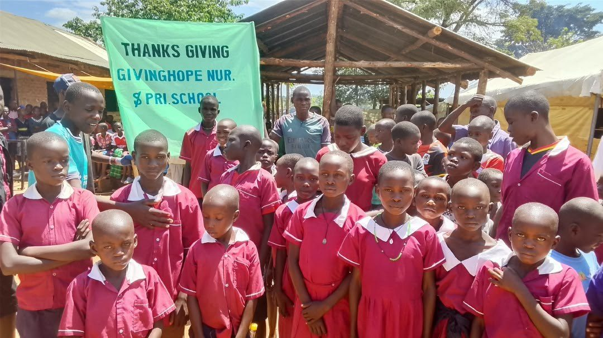
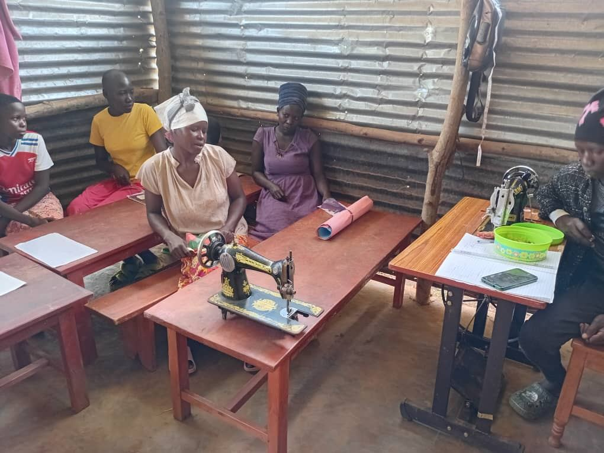
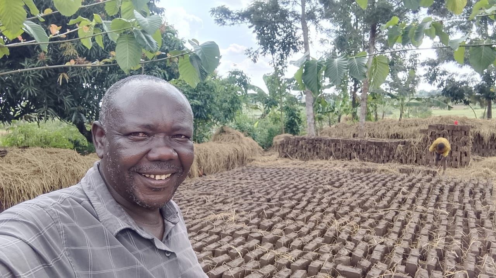

01 / EDUCATION
Learning and child development
Creating access to Christian education, nurturing character and helping children grow in knowledge, confidence and purpose.
Explore our school →We believe every person is created with God-given worth and potential. Through education, vocational skills, agriculture and practical community development, Kireta Foundation works alongside families to build stronger, more hopeful futures.

Kireta Foundation is a Christian-founded community organisation established in 2016 by Kireta Richard. Its journey began with prayer, evangelism and a growing conviction that faith must be visible in the way people care for one another.
As the founder and volunteers encountered orphaned children, vulnerable households, unemployment, food insecurity and preventable illness, the response became practical: providing basic necessities, supporting access to medical care, helping children with education and opening pathways to vocational skills.
Today, that same commitment is expressed through a growing range of initiatives, including Kireta Care Primary School, tailoring and vocational training, youth-led brick making, agriculture and community outreach.
Read our story →We respond to real needs while investing in people’s ability to shape their own future.
Creating access to Christian education, nurturing character and helping children grow in knowledge, confidence and purpose.
Explore our school →
Equipping women and community members with sewing skills, guided practice and the confidence to explore income-generating work.
Explore skills training →
Supporting practical brick making and community-led construction initiatives that develop skills, teamwork and local productive capacity.
Explore community development →
Promoting agriculture and poultry as practical ways to strengthen household resilience, food availability and income.
Explore agriculture →A Christian learning community where children are equipped academically, spiritually, socially and practically.

Serving learners from Baby Class to Primary Seven, the school seeks to make meaningful education accessible while nurturing discipline, faith, creativity, responsibility and care for others. It is rooted in the belief that every child deserves to be seen, encouraged and given the opportunity to flourish.
Alongside academic learning, pupils are encouraged to develop through sports and physical education, music, dance and drama, art and craft, and agriculture. These experiences help children build confidence, teamwork, creativity and practical understanding while connecting classroom knowledge with everyday life.
Explore the school“And whatever you do, whether in word or deed, do it all in the name of the Lord Jesus.”
Colossians 3:17Join us as a prayer partner, volunteer, supporter, church, school, organisation or development partner. Together, we can extend opportunity to more children and families.